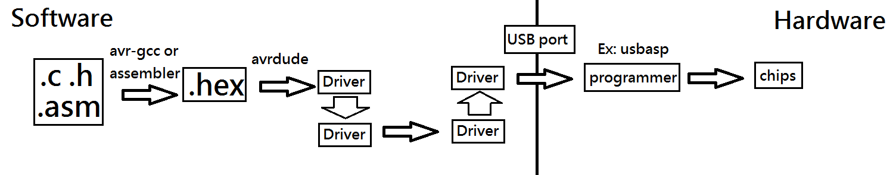

AVR: 架設Atmel AVR晶片的開發環境，完整開發流程
首先可參考The Idiot's Guide to Programming AVR's on the Cheap (with the Arduino IDE!)這是幹啥
ATMEL公司的某一系列微處理器，arduino是一種使用AVR作為處理器的平台。微處理器可以幹麻呢？呃---請去讀計算機概論---或者簡單來說，它就是很簡單的電腦，然後是由一些有點複雜邏輯數位電路所組成，可以寫程式改變這些邏輯電路的功能，它可以用來控制電器之類的…呃因為所謂電訊號就是用電位(電壓)傳遞，這些電路是數位的，亦即有兩種電壓…電壓可以控制電子元件…。當然，電腦也可，所有的電子產品都是用電傳遞訊號，只不過微處理器很便宜，加上它把某些電線以腳位引出(其它包在IC裡)，所以它才有地位在。(欸，可是32位元的微處理器明明比8位元強，價格沒貴多少，有時候還更便宜，功耗更低，為什麼程度跟8位元不相上下，無法完全取代它？嗯，我覺得這是已經慣用8位元微處理器不想更新的結果…)
學微處理器呢，有一個風險，就是當公司不再生產晶片的時候，技術也變得沒屁用(當然，如果取得的到電路圖就可以完整備份，像是用FPGA模擬，或者取得的到完整的功能也可，自己搞電路出來模擬，或者會有人生產相容於Atmel AVR的晶片)。Atmel AVR系列晶片因為目前很熱銷，所以選這個。那好，如果以後公司不生產晶片，要咋辦？就學新技術啊，其實，這些原理都算是共通的吧，再學新的不會很難。
既然是微處理器，那就軟硬體都要搞啦，以下將介紹AVR晶片開發流程。
架設開發環境--軟體
需要什麼
其實吼，軟體部分就是要把程式放到晶片裡啦。那麼，通常會用C語言或者專屬於該晶片的組合語言來寫程式。架設軟體環境就是，在電腦上裝編譯器或組譯器，將C(C語言)或組語(組合語言)，變成可以燒錄的.hex檔(差不多等於機械碼，一種聲明哪些資料要放微處理記憶體的檔案)。再經由燒錄程式傳到燒錄器而燒進去。所以，我們需要的軟體部分是是編譯器(通常用avr-gcc，有時候用avr-g++)，用組語開發的只要組譯器(不過用組語開發你就可以寫.hex檔了…)，還需要燒錄程式(通常用avrdude)。
Linux下安裝
安裝步驟參考1(AVR Setup)：安裝步驟參考2(The_AVR_GCC_Toolchain)：
一次全裝打
sudo apt-get install gcc-avr binutils-avr gdb-avr avr-libc avrdude打
sudo apt-get install gcc-avr裝avr-gcc跟avr-g++打
sudo apt-get install avrdude裝avrdude打
sudo apt-get install avr-libc裝avr-libc。要用<avr/io.h> <util/delay.h>之類的，要裝AVR libc。AVR Libc Home Page 載點 備份(avr-libc 安裝1.)打
tar jxvf avr-libc-1.8.1.tar.bz2解壓縮(avr-libc 安裝2.)打
cd avr-libc-1.8.1切換到avr-libc-1.8.1目錄下(avr-libc 安裝3.)打
./configure --build=`./config.guess` --host=avr配置環境及產生makefile(鳥哥的 Linux 私房菜)(avr-libc 安裝4.)打
打
sudo apt-get install gdb-avr裝avr-gdb(debugger)(optional, 不一定要安裝)Windows下安裝
可參考Cooper Maa: WinAVR初體驗，只要裝WinAVR，就avr-gcc, avr-g++, avrlibc, avrdude, avr-gdb全包了。以下是官網，載點，本站備份，對了，它好像在32位元跑跟64位元跑都可以。
架設開發環境--硬體
http://forum.arduino.cc/index.php?topic=45911.0 基本上就是要有燒錄器啦，當然，沒有燒錄器可以用暴力法，不過超慢(因為好像有幾萬個指令==)，暴力法是指用手動產生數位訊號燒錄，用硬體的暫存器(register)鎖住信號，然後按按開關…，就像這樣(電路圖)。所以，用已經可以運作的微處理器來做這些事情就好了。呃呃，這是個雞生蛋、蛋生雞的問題，因為第一台微處理器的燒錄器也是微處理器，到底是怎麼產生的呢？？？想必也是手動(其實應該是自動啦，第一台大電腦是ENIAC，這才是手動)。但現在既然已經有了雞(或者蛋)，那就沒差啦，用手動燒錄理論上可行，不過很累…。燒錄器要選啥呢？推薦USBASP，它是接收電腦從USB埠傳來的訊號，再用SPI燒錄晶片。最重要的是，它很便宜，用一顆ATMEGA8就可以實現，USBASP官網 電腦的驅動程式是一個個串在一起的，並不是直接控制，而是一個個驅動程式控制下一個…這樣子可以保持著靈活性，而且控制的東西不一樣時不用改變所有的驅動程式。
整體開發流程
寫程式
可以用組合語言(assembly)寫或者用C寫程式，如果是混合編程(C跟組語都有)，可以用一般正常C語言內嵌組合語言的方式寫(Inline Assembly)為什麼在Arduino IDE裡面，我們都寫 setup()跟loop()，真正自己編譯時，主程式卻是main()?
解：(參Topic: Setup and Loop??(arduino forum) )在Arduino\hardware\arduino\cores\arduino\main.cpp裡面
#include <Arduino.h>
int main(void)
{
init();
#if defined(USBCON)
USBDevice.attach();
#endif
setup();
for (;;) {
loop();
if (serialEventRun) serialEventRun();
}
return 0;
}
所以其實它還是有main()的。對了，此處的main()可以沒有回傳值(參 non-returning main )。
編譯
Blink.c
avr-gcc -Os -DF_CPU=12000000 -mmcu=atmega8 -o Blink.o -c Blink.c
avr-gcc -Os -DF_CPU=12000000 -mmcu=atmega8 -o Blink.elf Blink.o
avr-objcopy -O ihex Blink.elf Blink.hex
這些選項都要確實打上去，編譯才不會出錯，最後的.hex的就是要燒錄的參考Options for the C compiler avr-gcc(AVR webdoc)
-DF_CPU=12000000跟#define F_CPU 12000000 差不多，只差在如果是編譯器指令，好像是最早定義!?假設main.c裡面有#define APPLE 90，編譯器指令為 gcc -DAPPLE=50 main.c -DAPPLE=70 ，那麼最後APPLE還是90，但如果main.c 裡面是 ifndef #APPLE
#define APPLE 90 #endif，那麼最後APPLE會是70。詳細請上網查前置處理器相關的東西並或自己試。(註：-DAPPLE好像會把 APPLE設成1)-mmcu=atmega8則是指晶片為atmega8。-Os 是最佳化，此選項也要開，不然會出現 # warning "Compiler optimizations disabled; functions from <util/delay.h> won't work as designed" 如果你覺得編譯指令有點多，你可以學如何使用Makefile。
(事實上，使用批次檔(batch file on Windows)或shell script(on linux)也可以做到，但其實不太一樣，因為Makefile可以把編譯的工作包起來，而且編大型程式的時候不用完全重新編譯，這樣子組建時間會比較短。)
在Windows上，不能直接打
make指令，那你可以裝cygwin(好像是將linux移到windows上的工具)，或者指直接打指令，或者改用批次檔(沒有很建議，因為把編譯跟其它事情放在同一個檔案裡…)。燒錄(上傳、編程)至晶片(program the chip)
把電腦跟燒錄器連接，把燒錄器跟晶片連接。電路
用usbasp的話可以線上燒錄(ISP，in-system programming)，所以不用把晶片從電路拔起來，只要幾條線對接就可以了。(當然，外電路不能使programming出問題，像是不可以亂加電容…)或是說你也可以預留腳位(電路版上放排針給連接器連接)。不論是十線連接器(connector)或是六線的，其實只要連六條就可以了，因為它是用SPI介面(SPI Interface)通訊，需要的是電源VCC, GND, 以及4條訊號線(2條資料線：MOSI MISO，2條控制線：SS，SCK)。就全部對接就好了，完全不用外加電路。(SS 對接/RES(晶片重設腳，低電位觸發) )雖說是線上燒錄，但如果電路把燒錄的mosi miso sck rst佔用，那就無法燒錄，會出現
target doens't answer的錯誤訊息。然後打
avrdude -p atmega8 -c usbasp -U flash:w:"Blink.hex"
注意，燒錄程式是avrdude，所以選項跟剛才不一樣。請參考這裡Command Line Optionsavrdude: Warning: cannot query manufacturer for device: error sending control message: Operation not permitted
avrdude: Warning: cannot query product for device: error sending control message: Operation not permitted
avrdude: error: could not find USB device with vid=0x16c0 pid=0x5dc vendor='www.fischl.de' product='USBasp'
出現這些錯誤訊息時，請加
sudo，亦即(參avrdude not working[SOLVED](bbs.archlinux.org))
sudo avrdude -p atmega8 -c usbasp -U flash:w:"Blink.hex"
Links
http://www.atmel.com/webdoc/Created at 2015/11/17 night.
Last Update: 2016/1/23